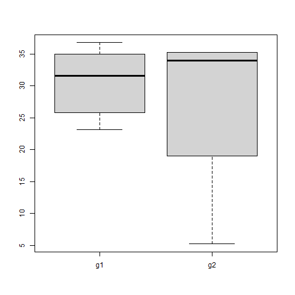

data explorer 2
age = c(23.0883, 25.8344, 29.4648, 32.7858, 33.6372,
34.935, 35.2115, 35.2115, 5.2115, 36.7803)
group = c(1, 1, 1, 2, 1, 1, 2, 2, 2, 1)
dframe = data.frame(age=age, group=group)分組列出summary:利用函數
age = c(23.0883, 25.8344, 29.4648, 32.7858, 33.6372,
34.935, 35.2115, 35.2115, 5.2115, 36.7803)
group = c(1, 1, 1, 2, 1, 1, 2, 2, 2, 1)
dframe = data.frame(age=age, group=group)
mygroup<-function(df,g,idx)
{
ft<-factor(df$g)
gf<-ft==levels(ft)[idx] # 第一組
g1<-df[gf,]
return(g1)
}
x<-mygroup(dframe,"group",1)問題：
現在把某個欄位依據分組畫出boxplot
A:age
B:group(1,2)
不足的補NA,每一欄成為矩陣，例如共兩組，那麼矩陣欄位就是2，比數為各組資料，長度不夠補na，
最後
boxplot(mtx)
age = c(23.0883, 25.8344, 29.4648, 32.7858, 33.6372,
34.935, 35.2115, 35.2115, 5.2115, 36.7803)
group = c(1, 1, 1, 2, 1, 1, 2, 2, 2, 1)
dframe = data.frame(age=age, group=group)
gf<-group==1
g1<-dframe[gf,1]
gf<-group==2
g2<-dframe[gf,1]
mlen<-max(length(g1),length(g2))
length(g1)<-mlen
length(g2)<-mlen
mtx<-cbind(g1,g2)
boxplot(mtx)
age = c(23.0883, 25.8344, 29.4648, 32.7858, 33.6372,
34.935, 35.2115, 35.2115, 5.2115, 36.7803)
group = c(1, 1, 1, 2, 1, 1, 2, 2, 2, 1)
dframe = data.frame(age=age, group=group)
vl<-list()
for (i in 1:2){
gf<-group==i
g1<-dframe[gf,1]
vl[[i]]<-g1
}
gn<-sapply(vl,length)
gn<-max(gn)
vl<-lapply(vl,`length<-`,gn) # 補NA
mtx<-matrix(unlist(vl),nrow=gn)
boxplot(mtx)
summary(dframe)
ft<-factor(dframe$group)
gn<-length(levels(ft)) # nlevels(ft)
gf<-ft==levels(ft)[1] # 第一組
g1<-dframe[gf,]
summary(g1)
gf<-ft==levels(ft)[2] # 第一組
g2<-dframe[gf,]
summary(g2)
mygroup<-function(df,g,idx)
{
ft<-factor(df$g)
gf<-ft==levels(ft)[idx] # 第一組
g1<-df[gf,]
return(g1)
}
for (i in 1:2){
x<-mygroup(dframe,“group”,i)
print(summary(x))
}